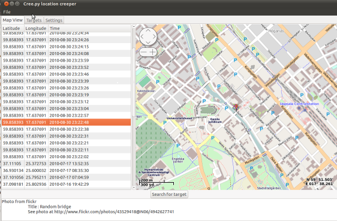
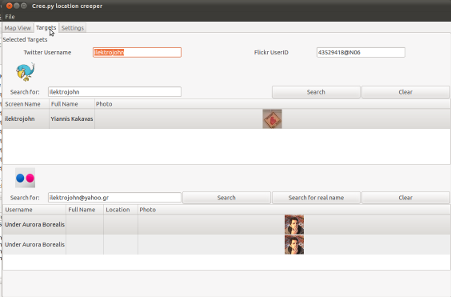

A geolocation information aggregator.
creepy is an application that allows you to gather geolocation related information
about users from social networking platforms and image hosting services. The information
is presented in a map inside the application where all the retrieved data is shown
accompanied with relevant information (i.e. what was posted from that specific location) to
provide context to the presentation.
Screenshots



Features
Location information retieval from :
-Twitter's tweet location
-Coordinates when tweet was posted from mobile device
-Place (geographical name) derived from users ip when posting on twitter's
web interface. Place gets translated into coordinates using geonames.com
-Bounding Box derived from users ip when posting on twitter's
web interface.The less accurate source , a corner of the bounding box is
selected randomly.
-Geolocation information accessible through image hosting services API
-EXIF tags from the photos posted.
Social networking platforms currently supported :
- Twitter
- Foursquare (only checkins that are posted to twitter)
Image hosting services currently supported :
- flickr - information retrieved from API
- twitpic.com - information retrieved from API and photo exif tags
- yfrog.com - information retrieved from photo exif tags
- img.ly - information retrieved from photo exif tags
- plixi.com - information retrieved from photo exif tags
- twitrpix.com - information retrieved from photo exif tags
- foleext.com - information retrieved from photo exif tags
- shozu.com - information retrieved from photo exif tags
- pickhur.com - information retrieved from photo exif tags
- moby.to - information retrieved from API and photo exif tags
- twitsnaps.com - information retrieved from photo exif tags
- twitgoo.com - information retrieved from photo exif tags
Automatic caching of retrieved information in order to reduce API calls
and the possibility of hiting limit rates.
GUI with navigateable map for better overview of the accumulated information
Handling twitter authentication in an easy way using oAuth. User credentials
are not shared with the application.
User/target search for twitter and flickr.
Install Instructions
Before using creepy there are a number of depencencies that must be resolved
The packages needed are :
tweepy https://github.com/joshthecoder/tweepy
osmgpsmap v0.7 https://github.com/nzjrs/osm-gps-map
python-flickrapi http://stuvel.eu/flickrapi
BeautifulSoup http://www.crummy.com/software/BeautifulSoup/
pyexiv2 v0.2 http://tilloy.net/dev/pyexiv2/
python-configobj
On Ubuntu 10.10 :
Add ppa for pyexiv2 0.2 version
# add-apt-repository ppa:pyexiv2-developers/ppa
Install packages :
# apt-get install python-osmgpsmap python-flickrapi python-beautifulsoup python-configobj python-setuptools
Install tweepy :
# easy_install tweepy
License
creepy is available under GPLv3
Authors
Yiannis Kakavas (jkakavas_AT_gmail_DOT_com)
Contact
Yiannis Kakavas (jkakavas_AT_gmail_DOT_com)
Download
You can download this project in either
zip or
tar formats.
You can also clone the project with Git
by running:
$ git clone git://github.com/ilektrojohn/creepy